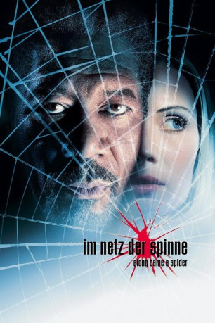

gesehen am 30.08.2016
gesehen am 30.08.2016Alternativ: Along Came a Spider gesehen am 30.08.2016
 
 IMDB-Wertung: 6.3 / 10
IMDB-Wertung: 6.3 / 10  Metascore:
Metascore: 
Nachdem er die Tochter eines Senators gekidnappt hat, fordert der offenbar geisteskranke Entführer Soneji den Polizeipsychologen Dr.Alex Cross persönlich heraus: Cross bleibt keine Wahl und er muss sich auf ein mörderisches Spiel einlassen. Gemeinsam mit der Secret Service-Agentin Jezzie Flannigan beginnt er die Jagd auf den Verbrecher. Schon bald wir ihnen klar, dass sie sich in einem raffiniert gespannten Spinnennetz bewegen und ihr Gegner ihnen immer einen Schritt voraus ist. Soneji geht es dabei nicht nur um das hohe Lösegeld, sondern vor allem um Publicity. Nach dem Mord an einem Unbeteiligten spitzt sich die Situation dramatisch zu, und Cross weiß, dass ihm nicht mehr viel Zeit bleibt, um das Leben des Mädchens zu retten.
Jahr: 2001
Dauer: 104 Minuten
FSK: 16
Land: USA Studio: Paramount PicturesTonspuren: DD5.1 - ,
Untertitel: Deutsch,
Auflösung: 1080p (1920x816) Größe: 8171 MB
Genre: Thriller
Regisseur:  Lee Tamahori
Lee Tamahori
Drehbuch: James Patterson, Marc Moss
Soundtrack: Jerry Goldsmith
Darsteller:
 Morgan Freeman als Alex Cross
Morgan Freeman als Alex Cross Michael Wincott als Gary Soneji
Michael Wincott als Gary Soneji Dylan Baker als Ollie McArthur
Dylan Baker als Ollie McArthur Mika Boorem als Megan Rose
Mika Boorem als Megan Rose Anton Yelchin als Dimitri Starodubov
Anton Yelchin als Dimitri Starodubov Jay O. Sanders als Kyle Craig
Jay O. Sanders als Kyle Craig Billy Burke als Ben Devine
Billy Burke als Ben Devine Michael Moriarty als Senator Hank Rose
Michael Moriarty als Senator Hank Rose Penelope Ann Miller als Elizabeth Rose
Penelope Ann Miller als Elizabeth Rose Anna Maria Horsford als Vickie
Anna Maria Horsford als Vickie Jill Teed als Tracie
Jill Teed als Tracie Tom McBeath als Country Chief Cabell
Tom McBeath als Country Chief Cabell Jonathan Walker als Reporter
Jonathan Walker als Reporter Darryl Scheelar als McArthur Entourage
Darryl Scheelar als McArthur Entourage Rick Kain als Train Passenger , uncredited
Rick Kain als Train Passenger , uncredited Campbell Lane als Mathias
Campbell Lane als Mathias Steve Makaj als News Co-Anchor
Steve Makaj als News Co-AnchorDatei: X:\3-Trilogie(A-F)\Alex Cross\Im Netz der Spinne (2001, FSK16, 1920x816).mkv seit 27.10.2015
Festplatte: HD Collection-2(A-Z)-3(A-M)
 Alle Filme aus Gruppe '3-Trilogie(A-F)\Alex Cross'
Alle Filme aus Gruppe '3-Trilogie(A-F)\Alex Cross'